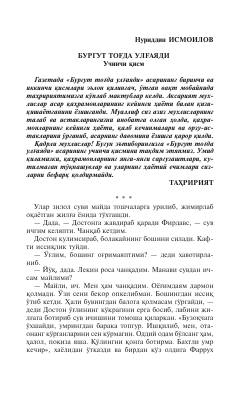

BT"Burgut tog'da ulg'ayadi" romanining uchinchi qismi.
Ushbu asar mashhur "Burgut tog'da ulg'ayadi" romatining uchinchi qismi bo'lib, qahramonlarning keyingi hayoti, taqdiri va yangi sarguzashtlarini hikoya qiladi. Asarda ota va o'rtasidagi munosabatlar, tog'dagi hayotiy sinovlar va insoniy kechinmalar ta'sirli tarzda ochib berilgan.